warning: by looking at this page you are agreeing to withhold
all complaints about that quality thereof.
(because i already know it sucks)
|
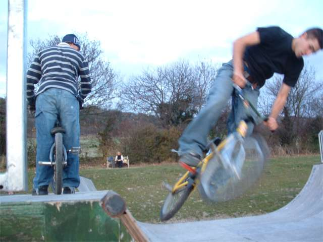 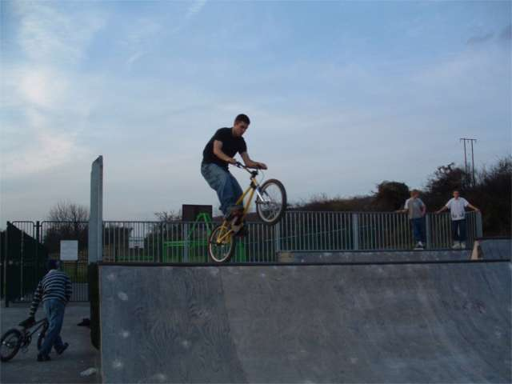 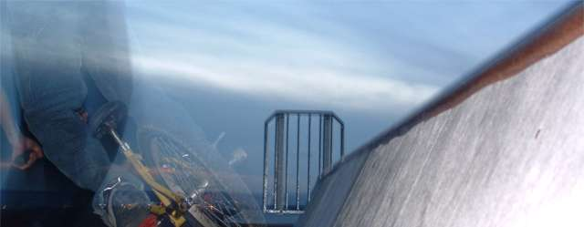 i did warn you of the artyness. take it. 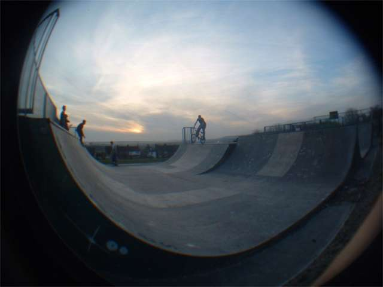 fish eye. where's the trick? 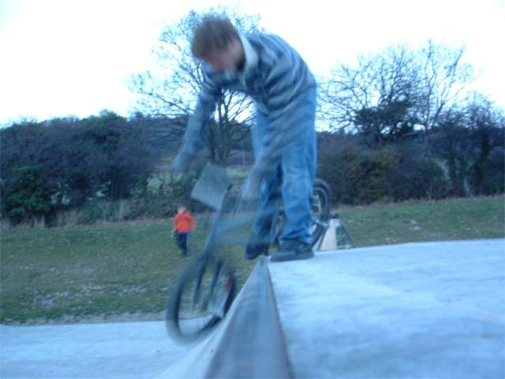 what's going on here. 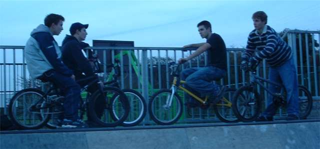 discussing riding with new friends. they ride street as you can see in the photos. they are good. 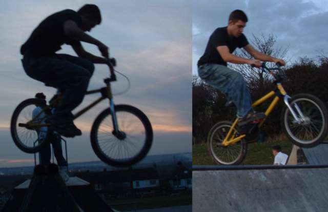 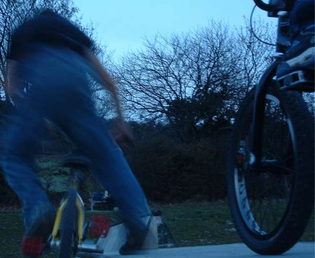 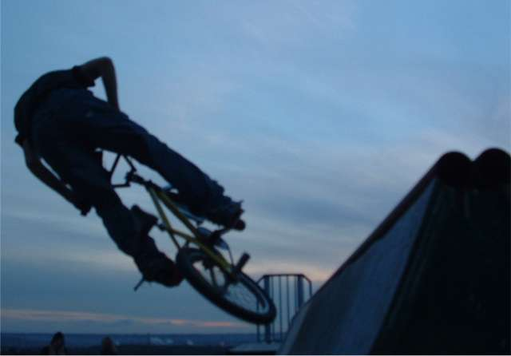 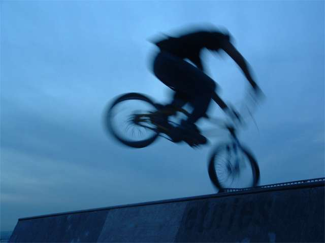 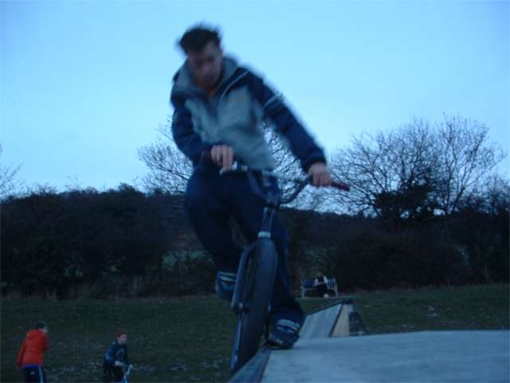 street skill coming through. i can't do that on pegs still. 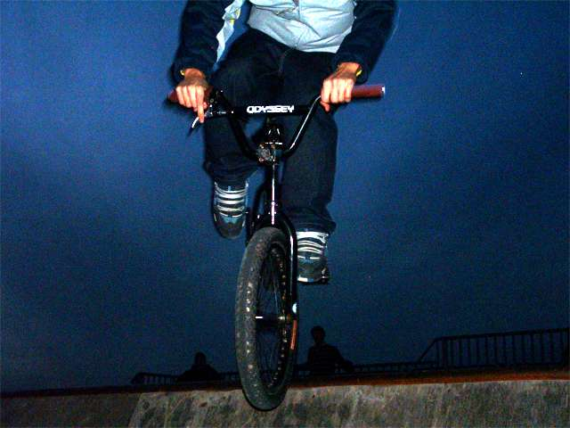 i made this deliberately grainy and i like it. i think that odyssey was cut out and stuck on letter by letter. 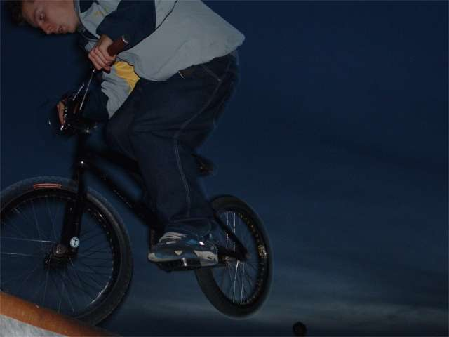 blurry pics and strange angles, but you clicked for more pictures so live with it. 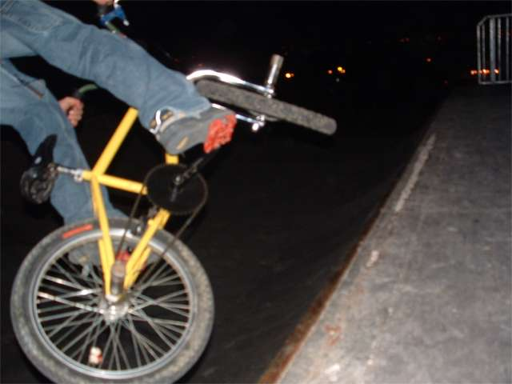 |